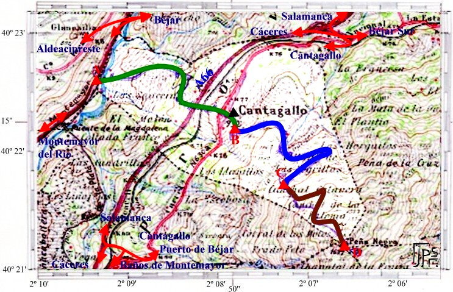

|  |
Sendero que
atraviesa todo el término municipal de Cantagallo
desde el noroeste hacia el sureste, con una altura inicial
de 660m y final de 1640m, aproximadamente.
Puntos de encuentro:
- A, calleja junto a la Calzada de la Plata: Se puede
llegar desde el pueblo, desde el camino Real (vía
de la Plata) o desde la "carretera" local de
Béjar a Montemayor del Río que enlaza las
carreteras locales Montemayor/Aldeacipreste y
Béjar/Aldeacipreste; en esta última desde
Béjar, el desvío se encuentra sobre el km
7, a la izquierda, y es paralela al camino romano de la
Ruta de la Plata. A 1 km de esta desviación,
antes de llegar a las casas previas al puente romano de
la Magdalena, entre muros de piedra, se abre la calleja
señalizada con un panel informativo sobre postes
de madera. Está junto a la calzada romana, a unos
50m del río y a unos 100m antes de las casas.
- B, subida a El Cañito, junto a Los Caños
y Ayuntamiento: Extremo más alto del pueblo con
un panel informativo. Subiendo, a la derecha se va al
cementerio y por la izquierda nuestro sendero junto al
que se encuentran los depositos de agua antiguos. El
paraje en el que se encuentran se denomina El
Cañito. Hay una zona recreativa junto a ellos.
Dentro de ella existe una pila de piedra con un
caño, pero frente a la entrada, a la izquierda
del camino, bajo un fresno, sobresaliendo de una pared
de piedra, se encuentra "El Cañito". Fue
reformado hace unos años y desplazado de su lugar
original unos metros, de ahí la
inscripción en el caño. La roca donde
está éste incrustado es la antigua y puede
apreciarse otra fecha. El agua es potable aunque como
reza el cartel "no está tratada".
- C, Canchal de Tio Sisla: Mirador natural a unas
decenas de metros más abajo de la fuente junto al
camino. Existe un pequeño cartel sobre un poste
de madera.
- D, Canchal de Peña Negra: Punto más alto
del término municipal y punto geodésico.
Junto a él se encuentra un centro de
observación de incendios. En él confluyen
los términos municipales de Cantagallo, Puerto de
Béjar, La Garganta (Cáceres), Candelario y
Béjar. Se puede llegar desde el pueblo, por una
pista forestal desde la Cuz de Béjar, senderos
desde La Garganta, ...
|
DESARROLLO
Exposición orientativa tramos
A>B, B>C, C>D. Duración (orientativa) de la
travesía, 1 hora cada tramo, a un paso normal.
Primer Tramo: Ruta de la Plata (A) - (B) subida
a El Cañito.
Inicio calleja
entre paredes de granito. Pasadera sobre el Río
Cuerpo de Hombre (piedras sobre las que hay que saltar
para cruzar sin mojarse). En la otra orilla, camino
forestal amplio. Al llegar a la puerta que "cierra" el
paso, se recomienda coger el camino viejo a la izquierda,
más descansado y bonito. La pista a partir de la
puerta es privada aunque podría usarse sin
problemas. En el pueblo, al atravesar la carretera, seguir
de frente. Pasar junto a la iglesia y llegar a los
caños de agua, es "No tratada" pero potable.
Desnivel desde unos 660m a 950m.
Segundo Tramo: subida a El Cañito (B) -
(C) Canchal de Tío Sisla.
Reiniciamos la
marcha ascendiendo hacia los depósitos de agua
antiguos junto a los cuales tomamos el camino ascendente,
a la derecha. Llegamos a El Cañito, a partir de
aquí la pendiente aumenta. Antes de la primera
cuerda, por encima de la peña de la Cruz y de los
depósitos nuevos, a la izquierda del camino, sobre
unos canchales, existe un mirador natural desde el que se
aprecia el pueblo y todo el camino andado. Continuando, en
la cima, podrá contemplarse una bella estampa de
Béjar, y, frente a nosotros, en lo alto, si nos
hemos fijado bien, habremos visto la peña de la
Cruz de Béjar, en la vertiente derecha (nuestra
izquierda) del arroyo de los Horquitos. Desde la cima la
pendiente se hace suave hasta el arroyo de las Amargas.
Atravesado éste, ascendemos hacia el Monte de
Cantagallo. Hay una puerta que cierra el paso, pero se
puede entrar fácilmente por su izquierda. Una vez
pasado el corral y la casa anexa (la casa del cabrero), el
camino se desvía a la derecha, pendiente elevada.
Pasado el robledal se llanea un poco hasta la fuente
formada por un tubo de hormigón. Conviene bajar
unos metros hasta los canchales cercanos a la derecha, es
nuestro punto C. Desde ellos puede contemplarse un bello
paisaje. Es el canchal de Tío Sisla, la leyenda
dice que en él se haya una cueva que utilizaba para
escabullirse de la justicia. Hasta el momento sigue muy
oculta. Desnivel desde 950m a unos 1300m.
Tercer Tramo: Canchal de Tío Sisla (C) -
(D) Peña Negra.
Volvemos a la
fuente seguimos subiendo. Tomarselo con calma, la
pendiente se hace bastante elevada. Sobre la pared de la
derecha puede apreciarse algún poste blanqueado y
señales para limitar el "coto" de caza formado por
el término municipal de Cantagallo. Éste
muro separa el Monte de Cantagallo con el término
municipal de Puerto de Béjar. Desnivel desde unos
1300m a 1635m.
|